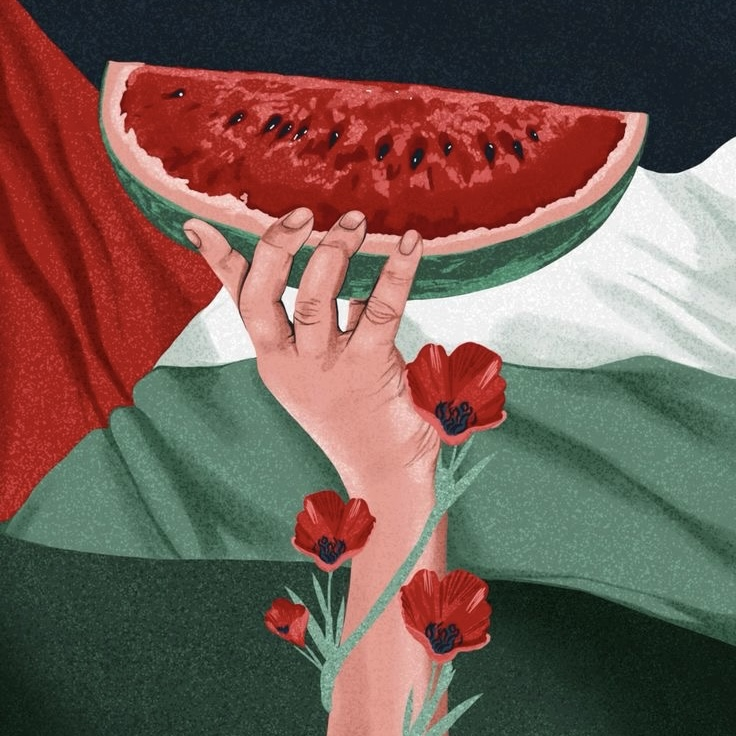
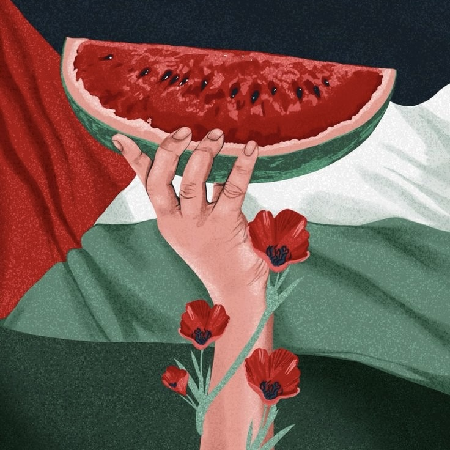

The "Nakba"
Palestinian term that expresses the humanitarian tragedy endured by the Palestinian people due to their displacement and expulsion from their homes outside Palestine, especially in 1948 when the state of Israel was established. The term encompasses a painful history of occupation, displacement, massacres, and the destruction of Palestinian properties. The Nakba is considered a symbol of Palestinian identity and significantly impacts their culture and daily lives. Although it is a historical event from the past, it still profoundly affects the contemporary Palestinian reality, making it a constantly relevant term.
In October 2023, a military escalation occurred between Palestinian resistance factions and Israel, as Palestinian fighters crossed the Israel-Gaza barrier and fired rockets into Israel. In response, Israel declared war on Hamas and imposed a comprehensive blockade on the Gaza Strip. More than five months later, the UN Security Council issued a resolution demanding a ceasefire in Gaza during the month of Ramadan, with widespread international support. Jordan, in cooperation with Egypt, also announced its intention to send aid to Gaza through the Rafah crossing. At the same time, Egyptian security sources warned of attempts to liquidate the Palestinian territories.
The world has gotten affected after what happen in 7 October, some of the main effects were: